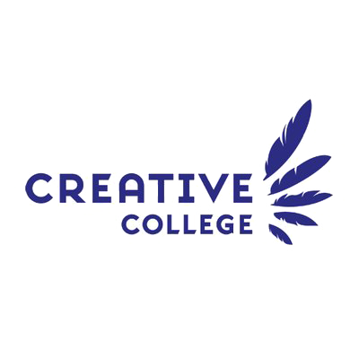

Professional Experience
-
Jumbo Supermarketen
July 2016 - Now
Verkoopmedewerker Vers
-
WE ARE THE NIGHT
July - August 2020
Junior Allround Mederwerker
-
February - July 2020
Intern - Production Assistant
-
Universiteit Utrecht
September 2018 - February 2019
Intern - Camera Operator
Education
-
HBO in Creative Business, Breda University of Applied Sciences
2020 – now
- Managment & Marketing orientated
- Full English course
-

MBO-4 in Audivisual Specialist, Creative College ROCMN
2020
- Editing know how
- Worked with professional AV equipment
- Set-up small live events
-
VMBO-TL , Anna van Rijn College
2016